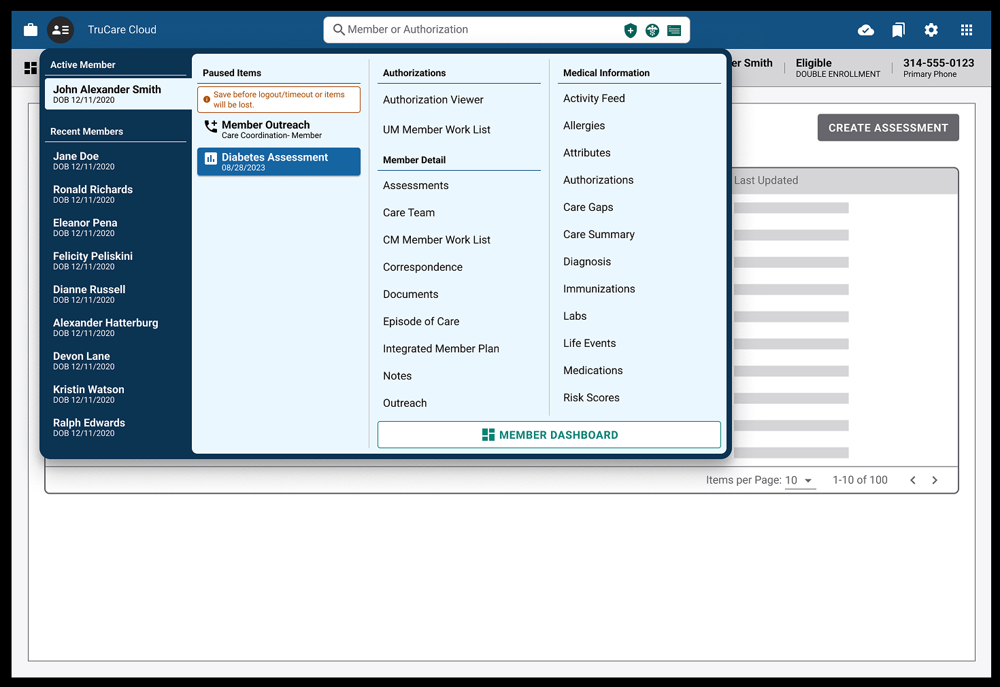

Rethinking Navigation with the Member Menu
TruCare Cloud had grown into a sprawling application, with teams building critical features in isolation—outreaches, assessments, care plans, and more. But with that growth came a big problem: there was no unified way to navigate between member-related tasks. Common workflows spanned three or more pages, with no central hub to guide users. As the system grew more complex, the cost of poor navigation only increased. I began exploring a solution well before the project was officially prioritized.

Caption - Final Member Menu
The final design for Member Menu is a responsive flyout, it gives power users the ability to switch between recent members and navigate directly to in progress work or critical paths for that member.As the design systems architect, part of my role is to keep an eye on the product as a whole. I observed that users were frequently forced to re-find the same member across features, duplicate effort, or drop out of context. I ran observation sessions, noting patterns like users repeatedly launching the same assessment manually. These sessions informed early prototypes I created in Figma and StackBlitz to demonstrate how a unified member navigation model might look—one that was persistent, context-aware, and quick to use.
“This wasn’t just a menu—it was architectural glue.”
Once the project was greenlit, I led working sessions with design, product, and platform architecture to validate the core concept: a top-level Member Menu that allowed users to switch between recent and active members, and quickly access key areas like Assessments, Authorizations, and Care Plans. Importantly, we scoped it carefully for MVP—delivering immediate value without requiring a full redesign of every member page. The navigation lived in the header, persisted across views, and was designed to feel like a native part of the platform.
The Member Menu included a list of recent members (up to 10), highlighting the active one, and offering direct links to high-impact areas. It also surfaced in-progress items so that users could resume unfinished work without needing to navigate through multiple levels of the app. This functionality significantly reduced cognitive overhead and click paths. One user said, “This is the first time I feel like I can move freely through the system.”
Caption - Early Menu Iteration
This early iteration of the menu used an alaways available side menu, while a better overall experience the business impact to implement was not feasible.Throughout development, I worked closely with engineering to ensure responsive behavior, state persistence, and future extensibility. I also aligned with accessibility partners and product teams to define what wouldn’t be solved in MVP, including historical navigation and triggered assessments. These conversations kept us focused and allowed us to ship something meaningful quickly while keeping doors open for future improvements.
The Member Menu wasn’t just a feature—it was a signal of architectural maturity. It introduced a central navigation model where none had existed, allowing users to stay in flow across member-related tasks. Most importantly, it helped shift the platform from a series of siloed tools into something that felt coherent. Navigation is one of the most invisible forms of UX, and this project helped make it seamless, scalable, and designed with intent.